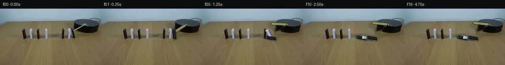

![首帧]()

Round 00
2026-11-04T22:46:08.367679+00:00像素候选变化代码 +261/−0inspection 更新
pixels 5922605719643ab4 · code 923ff2a680096c1e
查看本轮 generate.py 真实 diff
--- previous/generate.py +++ current/generate.py @@ -0,0 +1,261 @@ +#!/usr/bin/env python3 +"""Generate the 20-frame PixelWorld continuation using only local pixel operations.""" + +from pathlib import Path +import hashlib +import math + +import cv2 +import numpy as np +from PIL import Image, ImageDraw, ImageFont + +from artifact_io import save + + +ROOT = Path(__file__).resolve().parent +W, H = 256, 144 + + +def smoothstep(x: float) -> float: + x = float(np.clip(x, 0.0, 1.0)) + return x * x * (3.0 - 2.0 * x) + + +def polygon_mask(points, dilation=0): + mask = np.zeros((H, W), np.uint8) + cv2.fillConvexPoly(mask, np.round(points).astype(np.int32), 255, lineType=cv2.LINE_AA) + if dilation: + k = cv2.getStructuringElement(cv2.MORPH_ELLIPSE, (2 * dilation + 1, 2 * dilation + 1)) + mask = cv2.dilate(mask, k) + return mask + + +def make_clean_plate(source): + """Locally reconstruct the tabletop/platform hidden by the moving setup.""" + arm = np.zeros((H, W), np.uint8) + cv2.line(arm, (184, 63), (217, 39), 255, 7, lineType=cv2.LINE_AA) + + domino_polys = [ + np.array([(157, 49), (164, 51), (164, 78), (154, 78)]), + np.array([(173, 49), (181, 51), (180, 78), (169, 77)]), + np.array([(181, 48), (191, 51), (192, 78), (178, 78)]), + ] + masks = [] + all_mask = arm.copy() + for poly in domino_polys: + m = polygon_mask(poly, 1) + # Include the short, soft contact shadow at the foot of each upright piece. + x0 = int(np.min(poly[:, 0])) + x1 = int(np.max(poly[:, 0])) + cv2.ellipse(m, ((x0 + x1) // 2 + 3, 77), (7, 3), 0, 0, 360, 255, -1) + masks.append(m) + all_mask = cv2.max(all_mask, m) + + # TELEA preserves the surrounding low-frequency wood field while the radius stays local. + clean = cv2.inpaint(source, all_mask, 4, cv2.INPAINT_TELEA) + + # Add back a small amount of deterministic local table grain so reconstructed areas do not + # become unnaturally flat. Grain strength is estimated from nearby unobstructed table pixels. + rng = np.random.default_rng(5001) + noise = rng.normal(0.0, 0.75, (H, W, 1)).astype(np.float32) + table_only = (all_mask > 0) & (np.indices((H, W))[0] >= 46) + textured = clean.astype(np.float32) + textured[table_only] += noise[table_only] + clean = np.uint8(np.clip(textured, 0, 255)) + return clean, arm, masks + + +def composite_rgba(frame, layer): + alpha = layer[..., 3:4].astype(np.float32) / 255.0 + frame[:] = np.uint8(np.clip(layer[..., :3] * alpha + frame * (1.0 - alpha), 0, 255)) + + +def draw_arm(frame, angle_deg): + """Draw the wooden actuator, pivoting clockwise in screen coordinates.""" + pivot = np.array([216.0, 40.0]) + length = 39.5 + a = math.radians(angle_deg) + endpoint = pivot + np.array([math.cos(a), math.sin(a)]) * length + + # Use an RGBA layer so anti-aliased edges blend with the preserved source. + layer = np.zeros((H, W, 4), np.uint8) + p0 = tuple(np.round(pivot).astype(int)) + p1 = tuple(np.round(endpoint).astype(int)) + cv2.line(layer, p0, p1, (48, 49, 32, 225), 5, lineType=cv2.LINE_AA) + cv2.line(layer, p0, p1, (137, 148, 89, 255), 3, lineType=cv2.LINE_AA) + # A narrow warm highlight matches the source stick's pale upper edge. + normal = np.array([-math.sin(a), math.cos(a)]) … diff truncated; 174 more lines …